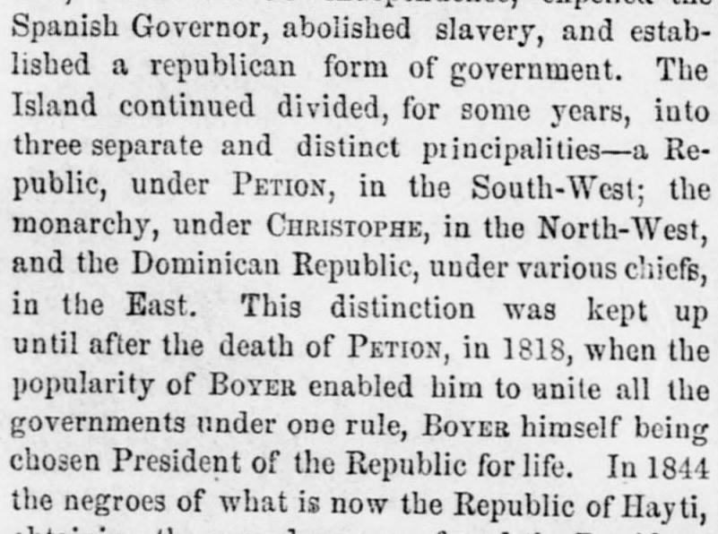
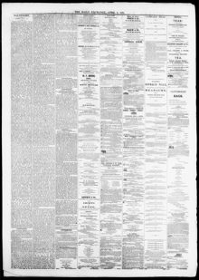

The Island continued divided, for some years, into three separate and distinct principalitiesLa isla continuó dividida, durante algunos años, en tres partes separadas e
The Daily Exchange. Baltimore, Md., April 2, 1861. Page 2. View the originalVer el original


See the full pageVer la página completaFollowing years of division and subsequent invasion and occupation under Boyer, the Dominican population rose in insurrection against Haytian ascendancy and chose Pedro Santana as president. After Santana's term expired in 1849, Jimenes was elected Chief Magistrate while Santana was banished due to suspicions of intriguing with Madrid; however, Jimenes soon conspired with Hayti's Emperor Soulouque to unite the island, prompting the Dominicans to recall Santana from exile and invest him with dictatorial power.Tras años de división y la subsiguiente invasión y ocupación bajo Boyer, la población dominicana se alzó en insurrección contra el predominio haitiano y eligió a Pedro Santana como presidente. Al concluir el mandato de Santana en 1849, Jimenes fue elegido primer mandatario mientras que Santana fue desterrado por sospechas de intrigas con Madrid; sin embargo, Jimenes pronto conspiró con el emperador Soulouque de Haití para unificar la isla, lo que impulsó a los dominicanos a llamar a Santana del exilio e investirlo de poderes dictatoriales.
FULL TEXT:TEXTO COMPLETO:
Spanish Governor, abolished slavery, and established a republican form of government. The Island continued divided, for some years, into three separate and distinct principalities—a Republic, under PETION, in the South-West; the monarchy, under CHRISTOPHE, in the North-West, and the Dominican Republic, under various chiefs, in the East. This distinction was kept up until after the death of PETION, in 1818, when the popularity of BOYER enabled him to unite all the governments under one rule, BOYER himself being chosen President of the Republic for life. In 1844 the negroes of what is now the Republic of Hayti,Gobernador español, abolió la esclavitud, y estableció una forma republicana de gobierno. La Isla continuó dividida, por algunos años, en tres principados separados y distintos —una República, bajo PETION, en el Suroeste; la monarquía, bajo CHRISTOPHE, en el Noroeste, y la República Dominicana, bajo varios jefes, en el Este. Esta distinción se mantuvo hasta después de la muerte de PETION, en 1818, cuando la popularidad de BOYER lo capacitó para unir todos los gobiernos bajo un gobierno, siendo BOYER mismo elegido Presidente de la República de por vida. En 1844 los negros de lo que ahora es la República de Haití,
[Editor's note: the paper writes of the east as part of Hayti. From 1822 to 1844 the Dominican Republic was held by Haitian military occupation, against its people's will; it restored its independence on February 27, 1844.][Nota del editor: el periódico habla del este como parte de Haití. De 1822 a 1844 la República Dominicana estuvo bajo ocupación militar haitiana, contra la voluntad de su pueblo; restauró su independencia el 27 de febrero de 1844.]